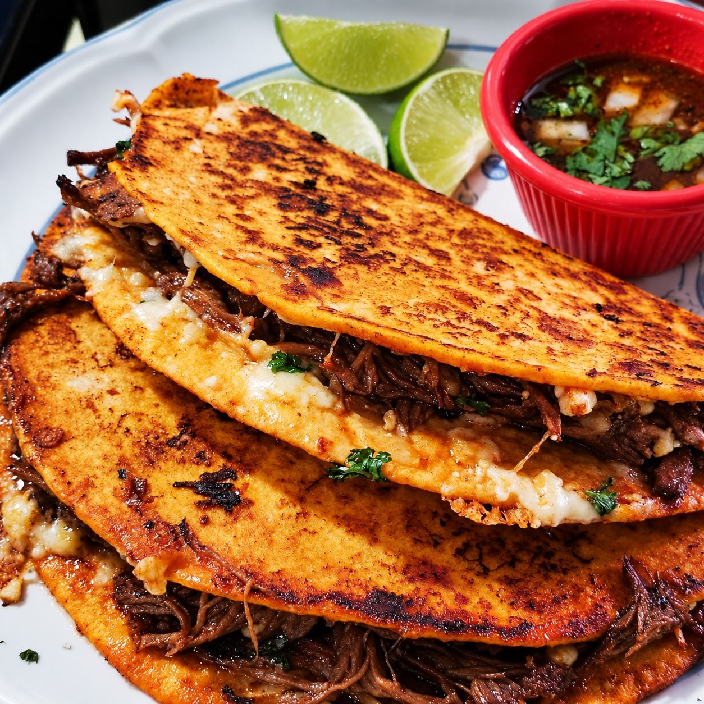

A Family Favorite
Cooking for my family is something I truly enjoy, and birria tacos have become one of our favorite meals. I love experimenting with recipes and making little changes until I find what works best for us. This is my take on birria tacos, adapted from a recipe by Joshua Weissman.
The beef takes a few hours to cook, but the tender meat, gooey cheese, and crispy tortillas make it well worth the wait. We serve the tacos with warm consomme for dipping, fresh lime wedges, Mexican rice, and refried beans on the side. It is a meal we all look forward to, and one that I have spent a lot of time perfecting.
I created this page to bring my recipe and directions together in one convenient place. When you are ready to plan your next taco night, use the Add buttons beside the ingredients to build your grocery list. I hope your family enjoys these birria tacos as much as mine does!
Ingredients
Click Add beside the ingredients to create a grocery list at the bottom of the page.
Recipe size: Original
Beef and Consomme
Taco Assembly
Directions
Beef and Consomme
- Prepare and sear the beef. Cut the chuck roast into chunks and trim away as much fat as possible. Season all sides generously with salt and black pepper. Heat a large, heavy-bottomed pot or Dutch oven over medium-high heat and add enough neutral oil to lightly coat the bottom. Working in batches, sear the beef until browned on all sides, then transfer it to a bowl.
- Soften and blend the chiles. While the beef sears, remove the stems and seeds from the guajillo chiles and rinse them. Bring a medium saucepan of water to a boil, turn off the heat, and add the chiles. Steep for about 5 minutes, until softened. Transfer the chiles to a blender and add the onion, garlic, chipotles in adobo, tomato paste, and vinegar. Blend on high until smooth.
- Make the spice mixture. In a medium bowl, combine the chicken bouillon powder, black pepper, white pepper, beef bouillon powder, brown sugar, paprika, oregano, thyme, cloves, cinnamon, salt, cumin, and bay leaves. If using Better Than Bouillon paste instead of powder, add it to the blender with the chiles or directly to the pot when adding the water.
- Simmer and skim the beef. Return all the seared beef to the pot and add just enough water to cover it. Bring to a boil over medium-high heat. Use a skimmer or large spoon to remove impurities from the surface until no more rise to the top.
- Braise until tender. Add the blended chile mixture, spice mixture, and oil to the simmering beef. Mix thoroughly, reduce the heat to low, cover, and braise for about 3½ hours, until the meat is fall-apart tender. Turn off the heat and let the beef rest for 15–20 minutes. Skim as much fat as possible from the surface and reserve it in a small bowl.
- Finish the meat and consomme. Transfer the beef to a large cutting board and chop it into bite-sized pieces. Season the meat to taste with some braising liquid and additional salt, if needed. Taste the braising liquid, add salt if needed, and keep it warm for serving.
Taco Assembly
- Dip a flour tortilla in the reserved braising fat.
- Toast it briefly on a flat-top griddle or cast-iron pan over medium heat, until lightly charred and warmed through.
- Spread braised beef over half of the tortilla and top it with shredded cheese.
- Fold the empty half over the filling to form a taco.
- Continue browning the taco, flipping it so both sides cook evenly and the cheese melts.
- Repeat for as many tacos as desired. Serve with lime wedges and a ramekin of warm consomme topped with chopped red onion and cilantro.
Grocery List
Your selected ingredients will appear here.